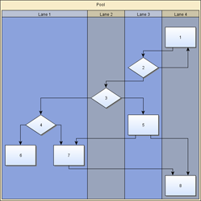
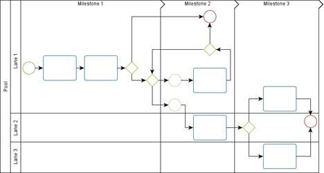

| Chapter 8. Tabular Data Presentation | ||
|---|---|---|
| Prev | Next | |
Table of Contents
Many application areas require a presentation of data where the nodes of a diagram are organized in a tabular way, i.e., where each node is associated to a specific row and column in the grid-like structure of a table. Swimlane layouts are a popular example of such presentations. Figure 8.1, “Tabular data presentation” shows samples of tabular presentations of diagrams.
Figure 8.1. Tabular data presentation
|

|

|
| Swimlane layout with four lanes from top to bottom. | A diagram following the Business Process Modeling Notation (BPMN) where swimlanes are additionally subdivided by so-called milestones. |
The yFiles diagramming library contains comprehensive support for tabular data presentation, which builds on the general concept of grouped graphs. The provided functionality covers the "look" as well as the "feel," i.e., table structures with rows and columns can be both rendered and also interactively edited. Rows and columns can be:
Furthermore, the hierarchical layout style, more precisely class IncrementalHierarchicLayouter, provides advanced support for automatic tabular layout.
The presentation of a diagram in a tabular way needs an additional element, namely the actual table to hold the proper nodes of the diagram. This table is modeled using a group node, and the diagram's proper nodes, i.e., the actual content nodes, need to be set up so that they are child nodes of this group node.
Using a group node to hold the content nodes brings all advantages of this concept as described in the section called “Grouping and Nesting”. For example, when the table group node is moved, the child nodes move accordingly, thus maintaining the visual clue that they are contained in the table group node.
The group node that models the table uses a special node realizer implementation,
class TableGroupNodeRealizer , to render
the visual representation of the table.
To assist in the configuration and manipulation of the structure of the table, which
comprises the rows and columns, a table structure model
is used.
, to render
the visual representation of the table.
To assist in the configuration and manipulation of the structure of the table, which
comprises the rows and columns, a table structure model
is used.
Also through the node realizer implementation, the group node also supports user interaction. For example, resizing a column, or editing the column labels.
It is crucial to understand, however, that the content nodes of a diagram and the table structure are only loosely coupled. More precisely, the association of a content node to a row and a column is only done on a geometric basis, i.e., the node's center coordinates determine the row (column) that it belongs to. This also means that when a content node is moved, the representation of the table does not change in any way.
|
Copyright ©2004-2015, yWorks GmbH. All rights reserved. |